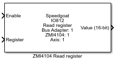

IO812 - Read register
IO812 - Read register —
Performs a read operation on a register in the ZMI4104 card.
Library
Simulink Real-Time - Speedgoat

Description
This driver block should be used for debugging purposes only. Please use in
combination with Zygo User’s Manual only. This is a 16-bit or 32-bit PCI
read.
Ports
This driver block has two input ports.
Input
-
Enable
If value is 1, the register read is enabled.
-
Register
Select the register offset (16-bit based) to read.
Parameters
Block setup Tab
- ZMI4104C identifier
Select the identifier for the ZMI card identity with 1 for ZMI card
one and 2 for ZMI card two.
- Measurement axis
Select the axis for the measurement (1 to 4)
- PCI access
Select the either 16-bit or 32-bit read
-
Sample Time
Defines the base sample time at which this driver block gets its sample hit. This
parameter can also be set to -1 for inherited
sample time. The units are in seconds.